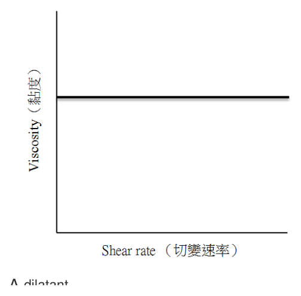
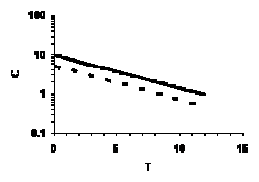
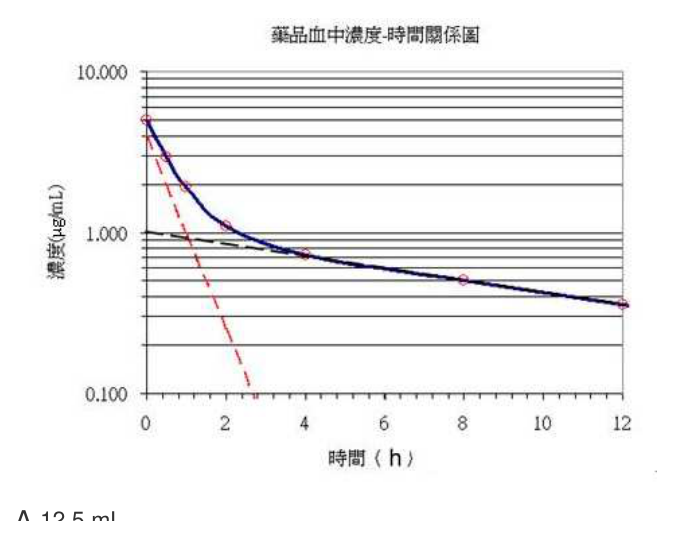

開卷有益 ／
藥師 ／ 藥劑學與生物藥劑學 ／ 107 年第 1 次107 年第 1 次藥師藥劑學與生物藥劑學試題與答案
這一頁是民國 107 年第 1 次藥師藥劑學與生物藥劑學的整份歷屆試題，共 80 題，題目與標準答案出自考選部「國家考試試題及測驗式試題答案」開放資料，其中 78 題附有詳解。以下逐題列出題幹、選項與答案；要計時作答或記錄成績，請用線上練習。
考選部原始場次代碼：107020
線上作答這一科 →
全部 80 題
第 1 題
有關藥品有效期限之決定，下列那一類藥品是不採安定性試驗數據？
（A） antibiotics（B） allergenic extracts（C） antihistamines（D） diuretic drugs本題送分，無標準答案
詳解與考點 本題經考選部公告一律給分。藥品有效期限之決定原則上均須依安定性試驗數據訂定，惟(B)allergenic extracts（過敏原萃取液）因其成分複雜、批次間差異大，傳統上多依生物效價或臨床經驗訂定效期而非典型化學安定性試驗，教材對其是否完全排除安定性試驗仍有出入，與(A)(C)(D)等一般化學藥品之慣例產生認定分歧。(A)antibiotics、(C)antihistamines、(D)diuretic drugs皆屬一般化學藥物，均依標準安定性試驗訂定效期，可先排除。作答以現行藥品優良製造規範（GMP）與安定性試驗基準為準。
第 2 題
下列何者可降低藥物的溶離速率？
（A） 增加藥物的表面積（B） 增加溶離媒液的攪拌速度（C） 增加藥物粒子的粒徑（D） 增加藥物在擴散層（diffusion layer）的濃度答案：（C）
詳解與考點 正解：依 Noyes-Whitney equation，溶離速率與總表面積 A 成正比。增加藥物粒子的粒徑會使相同藥量的總表面積下降，因此溶離速率降低，故選 C。
A：增加藥物表面積會增加與溶離媒液接觸的界面，溶離速率上升。
B：增加攪拌速度可減少擴散層厚度，藥物較快通過擴散層，溶離速率上升。
D：在未飽和受體液中，提高界面附近的藥物濃度會增加濃度梯度，促進而非降低溶離。
本題考點：Noyes-Whitney equation——溶離速率隨表面積與濃度梯度增加，隨擴散層厚度增加而下降；粒徑與溶離（particle size and dissolution）——固定藥量時粒徑變小會增大總表面積，需加快溶離時採相反方向處理。
第 3 題
若使用乙醇來作為糖漿劑（65% w/v，50 mL）的抑菌劑，假設所需乙醇為18%，則所需乙醇的量最接近多少 mL？
（A） 0.5（B） 1.7（C） 5（D） 8答案：（B）
詳解與考點 正解：本題的關鍵是「18%」所針對的濃度基準是自由水（free water），不是整瓶製劑。糖漿中被蔗糖結合的水不供微生物利用，需要乙醇防腐的只有自由水。50 mL 的 65% w/v 糖漿含蔗糖 32.5 g，以蔗糖比重約 1.6 計約佔 20.3 mL，故總含水約 29.7 mL；以 85% w/v 糖漿可自身防腐反推，每 1 g 蔗糖約結合 0.55 mL 水，32.5 g 結合約 17.9 mL，自由水約 11.8 mL。所需乙醇 = 11.8 mL × 18% ≒ 2.1 mL，四個選項中最接近 1.7 mL，故選 B。
A：0.5 mL 對 50 mL 成品僅約為 1%，不符合直接以 18% 計算的結果。
C：5 mL 對 50 mL 成品為 10%，同樣無法直接代表 18%。
D：8 mL 對應的是把 18% 直接套在整瓶 50 mL 上（50 mL × 18% = 9 mL）。它看起來對，是因為忽略了蔗糖已結合絕大部分水、真正需要防腐的只有自由水，因此（D）是本題最強誘答而非正解。
本題考點：百分濃度（percentage strength）——計算前必須先確認 % 是 w/w、w/v 或 v/v；糖漿保存劑計算（syrup preservative calculation）——乙醇量需同時知道目標濃度基準與所用乙醇原液濃度，缺一項便不能唯一求值。
第 4 題
下列化合物做為糖漿劑的保存劑（preservatives）時，何者所需濃度最低？
（A） butylparaben（B） benzoic acid（C） methylparaben（D） sorbic acid答案：（A）
詳解與考點 正解：parabens 的烷基鏈較長時抗菌效力通常較強；butylparaben 在所列保存劑中所需濃度最低，故選 A。
B：benzoic acid 的保存效果受未解離比例與 pH 影響，通常不能以比 butylparaben 更低的濃度達成相同效果。
C：methylparaben 雖常用於糖漿劑，但抗菌效力低於較長烷基鏈的 butylparaben，所需濃度較高。
D：sorbic acid 的效力亦受 pH 影響，所需濃度不低於 butylparaben。
本題考點：parabens 的抗菌效力（paraben preservative potency）——同類 paraben 比較時，烷基鏈較長通常效力較強但水溶性較差；保存劑選擇（preservative selection）——比較最低有效濃度時，要同時分辨效力與製劑中的可溶性。
第 5 題
下列氯化合物中，何者之水溶解度最差？
（A） BaCl2（B） MgCl2（C） HgCl（D） HgCl2本題送分，無標準答案
第 6 題
中華藥典中有關甜橙皮糖漿（orange syrup）中可加入下列何者，因其具有分散及助濾作用？
（A） 滑石粉（talc）（B） 酒精（alcohol）（C） 檸檬酸（citric acid）（D） 碳酸鎂（magnesium carbonate）答案：（A）
詳解與考點 正解：甜橙皮糖漿含有揮發油成分，滑石粉（talc）可協助其分散，並以細微不溶性粉末吸附雜質而助於過濾澄清，故選 A。
B：酒精（alcohol）可作溶媒或影響保存性，但不是此處所問的分散及助濾材料。
C：檸檬酸（citric acid）主要用於酸化與調整風味，並不以助濾為功能。
D：碳酸鎂（magnesium carbonate）可用於酸鹼調整或吸附用途，但不是甜橙皮糖漿中兼具分散及助濾作用的標準選擇。
本題考點：滑石粉的製劑用途（talc in pharmaceutical preparations）——遇到含油性或混濁成分的糖漿劑，滑石粉可作分散與助濾材料；糖漿澄清（syrup clarification）——應區分溶媒、酸化劑與實際協助過濾的細微不溶性粉末。
第 7 題
下列粒徑大小何者不屬於膠體範圍？
（A） 0.01 mm（B） 10-6 m（C） 0.01 µm（D） 10-5 cm答案：（A）
詳解與考點 正解：膠體粒徑約在 1 nm 至 1 μm。0.01 mm = 0.01 × 10^-3 m = 10^-5 m = 10 μm，已大於膠體上限，故選 A。
B：10^-6 m = 1 μm，位於本題採用的膠體範圍上限。
C：0.01 μm = 10 nm = 10^-8 m，落在膠體粒徑範圍內。
D：10^-5 cm = 10^-7 m = 0.1 μm，也在膠體粒徑範圍內。
本題考點：膠體粒徑（colloidal particle size）——先把所有選項換成同一單位再與 1 nm 至 1 μm 比較；長度單位換算（unit conversion）——mm、cm、μm 與 m 的指數差異大，須逐步換算避免量級誤判。
第 8 題
疏水性藥物製成下列何種製劑時會使水的蒸氣壓下降最大？
（A） 微膠粒水溶液（B） w/o乳劑（C） 水質懸液劑（D） o/w乳劑答案：（A）
詳解與考點 正解：關鍵在水蒸氣壓下降屬依數性（colligative property），需比較水相中有效分散粒子的數目。以題目預設的相同藥量比較，微膠粒水溶液可使疏水性藥物藉界面活性劑在連續水相形成許多微膠粒，較粗大的油滴或懸浮粒子提供更多有效分散單位，故水的蒸氣壓下降最大，故選 A。
B：w/o 乳劑的外相為油相，水不是連續相，不能像微膠粒水溶液般在連續水相提供最多分散粒子。
C：水質懸液劑中的疏水性藥物主要以較大且未溶解的粒子存在，粒子數效應小於微膠粒系統。
D：o/w 乳劑雖以水為外相，但疏水性藥物多位於油滴中，形成的有效分散單位少於微膠粒水溶液。
本題考點：依數性（colligative properties）——蒸氣壓下降看連續相中有效溶質或分散粒子的數目，而不是只看藥物總量；微膠粒增溶（micellar solubilization）——疏水性藥物由微膠粒帶入水相時，可與粗分散系統區分。
第 9 題
甲乙兩液體均是牛頓流體，今混合100 mL液體甲（黏度=1.0 cP）與400 mL液體乙（黏度=4.0 cP），則均勻 混合液的黏度值為多少cP？
（A） 1.0（B） 2.5（C） 3.5（D） 4.0答案：（B）
詳解與考點 正解：兩液均為 Newtonian fluid 時，依流動性（fluidity）作體積加權。先求體積分率：甲 = 100 mL / 500 mL = 0.2，乙 = 400 mL / 500 mL = 0.8。流動性為 φ = 1/η，因此 φ混合 = 0.2 × (1 / 1.0 cP) + 0.8 × (1 / 4.0 cP) = 0.2 + 0.2 = 0.4 cP^-1。故 η混合 = 1 / 0.4 cP^-1 = 2.5 cP，故選 B。
A：1.0 cP 只反映液體甲的黏度，未納入液體乙的體積與流動性。
C：3.5 cP 不符合兩液流動性依體積加權後再取倒數的結果。它看起來對，是因為把黏度當成可直接依體積分率平均的量（0.2 × 1.0 cP + 0.8 × 4.0 cP = 3.4 cP，恰在 3.5 附近）；黏度不具加成性，具加成性的是流動性 φ = 1/η，故須先取倒數加權，再倒回黏度。
D：4.0 cP 只反映液體乙的黏度，未納入液體甲的體積與流動性。
本題考點：流動性（fluidity）——黏度混合題先轉為 φ = 1/η，再按體積分率加權；牛頓流體（Newtonian fluid）——在固定溫度下其黏度不隨剪切速率改變，可依題設套用黏度與流動性的關係。
第 10 題
皂土乳漿（bentonite magma）靜置後形成gel，使用時需搖晃，此為下列何種現象？
（A） cold flow（B） dilatant（C） Newtonian（D） thixotropy答案：（D）
詳解與考點 正解：皂土乳漿靜置時形成 gel，搖晃受剪切後又變得較易流動，這是可逆且與時間相關的剪切變稀現象 thixotropy，故選 D。
A：cold flow 是材料在自身重量下緩慢變形或流動，並非靜置成 gel、搖晃後流動的可逆現象。
B：dilatant 是剪切速率增加時黏度上升的剪切增稠，方向與本題相反。
C：Newtonian 流體在固定溫度下黏度不隨剪切速率或時間改變，不能解釋本題的結構重建。
本題考點：觸變性（thixotropy）——靜置後結構重建而黏度上升、受剪切後結構破壞而變稀時選此現象；剪切增稠（dilatancy）——剪切時黏度上升才是 dilatant，須與 thixotropy 的變稀方向區分。
第 11 題
利用下列何種染劑可以從顯微鏡下觀察W/O乳劑的外相？
（A） Congo Red（B） fluorescein isothiocyanate（C） methylene blue（D） Orange II答案：（B）
詳解與考點 正解：W/O 乳劑的外相是油相，觀察外相應選可標示油相的染劑。fluorescein isothiocyanate 可作螢光標示而顯示連續油相，故選 B。
A：Congo Red 為親水性染劑，主要標示水相液滴，不能直接顯示 W/O 的外相。
C：methylene blue 易分布於水相，會標示內相水滴而非連續油相。
D：Orange II 為水溶性染劑，辨識的是水相，不是 W/O 乳劑的外相。
本題考點：乳劑型態鑑別（emulsion type identification）——先判定連續相，再選會分布於該相的染劑；W/O 乳劑（water-in-oil emulsion）——水滴為內相、油為外相，親水性染劑只能標示分散水滴。
第 12 題
一般製備乳劑時，應選擇下列何種mortar？
（A） Wedgwood mortar（B） glass mortar（C） Mica mortar（D） plastic mortar答案：（A）
詳解與考點 正解：製備乳劑需要藉研磨建立細緻分散，Wedgwood mortar 的粗糙瓷面可提供足夠摩擦力，適合研和油相、水相與乳化劑，故選 A。
B：glass mortar 表面平滑，較適合混合溶液或不需強力研磨的製劑，不是一般乳劑的首選。
C：Mica mortar 不具 Wedgwood mortar 用於乳劑研和所需的標準粗糙研磨面。
D：plastic mortar 的表面與耐用性不適合一般乳劑所需的充分研磨。
本題考點：乳劑調製（emulsion compounding）——需形成初乳時選能提供充分摩擦力的粗糙研缽；Wedgwood mortar——其未上釉的粗糙表面適合研磨與分散，與平滑的 glass mortar 功能不同。
第 13 題
一懸浮液塗抹於皮膚表面上如下圖所示，此流體特性為何？

（A） dilatant（B） elastic（C） pseudoplastic（D） Newtonian答案：（D）
詳解與考點 正解：圖中黏度對切變速率作圖為一條水平直線，代表黏度不隨切變速率改變而改變，此為牛頓流體的定義特徵，故選 D。
A：dilatant（脹流性）流體的黏度會隨切變速率上升而增加，圖形應呈上升曲線，與圖中的水平直線不符。
B：elastic（彈性）描述的是材料受力後儲存並釋放形變能量的性質，屬於固體力學範疇，不是以黏度對切變速率作圖來表徵的流體分類。
C：pseudoplastic（擬塑性）流體的黏度會隨切變速率上升而下降，圖形應呈下降曲線，與圖中水平不變的黏度不符。
本題考點：牛頓流體與非牛頓流體的判別（Newtonian vs non-Newtonian）——黏度對切變速率作圖為水平線即為牛頓流體，上升為 dilatant、下降為 pseudoplastic，是分辨流變曲線型態最直接的判準；半固體劑型的塗抹性——懸浮液塗抹於皮膚表面時的流變行為會影響其塗展與附著特性，臨床劑型設計常依此選擇適當的稠化劑系統。
第 14 題
Carbopol（carbomer）於下列何種pH時一定無法形成gel？
（A） 2（B） 5（C） 7（D） 9答案：（A）
詳解與考點 正解：Carbopol（carbomer）是交聯聚丙烯酸，形成 gel 需靠羧基離子化後的鏈段伸展與膨潤。pH 2 時羧基大多未解離，聚合物鏈收縮而無法形成 gel，故選 A。
B：pH 5 已足以使部分羧基解離並產生膨潤，不屬一定無法形成 gel 的條件。
C：pH 7 時羧基離子化與鏈段排斥明顯，可形成 gel。
D：pH 9 可能影響最適黏度，但不代表一定無法形成 gel；題目所問的絕對情形仍是強酸性。
本題考點：carbomer 膠化（carbomer gelation）——需先有適當中和使羧基離子化，才能讓聚合物鏈伸展增稠；pH 對高分子膠體的影響（pH-dependent swelling）——強酸下電離受抑、膨潤不足，看到 pH 2 應優先排除膠化。
第 15 題
利用HLB＝8與12之二種界面活性劑混合調配HLB值為9之溶液時，其比例為何？
（A） 1：2（B） 1：1（C） 2：1（D） 3：1答案：（D）
詳解與考點 正解：混合 HLB 值以重量分率線性加權。設 HLB = 8 的界面活性劑分率為 x，則 8x + 12(1 - x) = 9；整理得 12 - 4x = 9，x = 0.75。因此 HLB = 8 與 HLB = 12 的比例為 0.75:0.25 = 3:1，故選 D。
A：1:2 時混合 HLB = (8 × 1 + 12 × 2) / 3 = 10.67，不是 9。
B：1:1 時混合 HLB = (8 + 12) / 2 = 10，不是 9。
C：2:1 時混合 HLB = (8 × 2 + 12 × 1) / 3 = 9.33，不是 9。
本題考點：HLB 混合計算（HLB blending）——目標 HLB 靠近哪個成分，就應提高該成分的重量分率；加權平均（weighted average）——先把比例換成分率再代入 HLB 加權式，可避免將比例方向顛倒。
第 16 題
有關利用polyoxyethylate材質製備溫控型藥物貼片之敘述，下列何者正確？
（A） 利用溫度上升，該材質產生吸熱與脫水，進而釋放藥物（B） 利用溫度上升，該材質產生放熱與脫水，進而釋放藥物（C） 利用溫度下降，該材質產生吸熱與脫水，進而釋放藥物（D） 利用溫度下降，該材質產生放熱與脫水，進而釋放藥物答案：（B）
詳解與考點 正解：溫度上升會觸發 polyoxyethylate 材質的溫敏相轉換，使聚合物脫水、收縮，原先受網絡束縛的藥物便較容易逸出。判準先落在溫度方向與脫水的連鎖：四個選項中同時具備「溫度上升」與「脫水釋藥」者只有（A）與（B），而本題敘述將此相轉換的熱效應列為放熱，（B）完整符合溫度上升、放熱、脫水與釋藥的連鎖關係，故選 B。
A：溫度上升與脫水的方向雖與溫敏釋藥相符，但（A）把相轉換的熱效應寫成吸熱，與本題所採敘述的放熱一項不符。
C：溫度下降通常使此類溫敏材料較易保持水合狀態；（C）將觸發脫水與釋藥的溫度方向倒置。
D：（D）同時把溫度方向寫成下降，且把熱效應寫成放熱；即使保留放熱一項，仍無法構成升溫誘發脫水釋藥的機制。
本題考點：溫敏聚合物釋藥（thermoresponsive polymer drug delivery）——判斷時先看升溫或降溫是否造成聚合物收縮與脫水，再連結藥物由基質逸出的方向；相轉換熱效應（phase-transition thermodynamics）——吸熱或放熱須與題目指定的聚合物相轉換一起判讀，不能只看是否出現脫水。
第 17 題
下列有效成分的栓劑， 何者主要作用於局部？
（A） chlorpromazine（B） indomethacin（C） morphine（D） miconazole答案：（D）
詳解與考點 正解：栓劑可用於局部或全身治療，判準在有效成分的治療目標。miconazole 為抗真菌藥，製成栓劑時主要在給藥部位接觸並抑制真菌，不以達到全身治療濃度為主要目的，故選 D。
A：chlorpromazine 的治療作用須經全身吸收後作用於中樞神經系統；以栓劑給藥只是改變給藥途徑，不是局部治療。
B：indomethacin 為全身性止痛抗發炎藥，直腸給藥後的目的仍是吸收進入循環以產生全身藥效。
C：morphine 的鎮痛作用主要經中樞 opioid receptors 產生，栓劑使用時同樣以全身吸收為目標。
本題考點：栓劑的局部與全身作用（local versus systemic suppositories）——先辨認藥物是否需進入循環才能到達作用部位；局部抗真菌治療（local antifungal therapy）——藥物在黏膜或皮膚表面達有效濃度即可，不能因劑型為栓劑就一概視為全身給藥。
第 18 題
下列何者屬於水和性軟膏基劑？
（A） 親水軟膏（B） 聚乙二醇軟膏（C） 羊毛脂（D） 單軟膏答案：（A）
詳解與考點 正解：本題的水和性軟膏基劑是指可與水形成乳化系統、可用水洗除的基劑分類。親水軟膏（hydrophilic ointment）含乳化成分與水相，屬 water-removable base，故選 A。
B：聚乙二醇軟膏（polyethylene glycol ointment）屬水溶性基劑，雖可溶於水，卻不是本題所指以親水軟膏命名的水和性乳化基劑；分辨關鍵在基劑分類，不是只看能否接觸水。
C：羊毛脂（lanolin）主要屬吸收性基劑，可吸收一定量的水，但本質仍偏油脂性，不能等同於親水軟膏的水洗性基劑。
D：單軟膏（simple ointment）以烴類油脂性成分為主，具有封閉與潤膚性，不能直接以水洗除。
本題考點：軟膏基劑分類（ointment-base classification）——水洗性基劑須能形成或維持可水洗的乳化系統；水溶性與水洗性（water-soluble versus water-removable bases）——聚乙二醇基劑可溶於水，但與含乳化系統的親水軟膏是不同分類；吸收性基劑（absorption bases）——可吸水不表示本身就是水洗性基劑。
第 19 題
有關親水軟膏（hydrophilic ointment）的敘述，下列何者錯誤？
（A） 關於此軟膏的製備，首先須將油相加溫至約75℃（B） 此軟膏可以用水稀釋（C） 此軟膏的油相主要是由stearyl alcohol和yellow petrolatum所組成（D） 由於此軟膏含水，在製備過程中需添加methylparaben和propylparaben做為防腐保存劑答案：（C）
詳解與考點 正解：本題問的是錯誤敘述，關鍵在親水軟膏油相所用的 petrolatum 等級。親水軟膏的油相以 stearyl alcohol 與 white petrolatum 為主要組成；（C）寫成 yellow petrolatum，因此不符合該處方組成，故選 C。
A：製備乳化型親水軟膏時，油相須加熱熔融並與同溫水相乳化；約 75℃ 是讓油相成分充分熔融並利於混合的處理條件。
B：親水軟膏含有乳化系統，加入水後仍可維持可分散或可稀釋的性質，這正是其水洗性用途的基礎。
D：含水處方具有微生物生長風險，methylparaben 與 propylparaben 可作為防腐保存成分；（D）描述的是含水軟膏製備時的合理考量。
本題考點：親水軟膏組成（hydrophilic ointment composition）——辨認油相時區分 white petrolatum 與其他 petrolatum 等級；乳化型軟膏製備（emulsified ointment preparation）——油相與水相須在適當溫度下混合，才能形成均一基劑；含水製劑防腐（preservation of aqueous preparations）——含水系統要評估微生物風險並配置適當防腐成分。
第 20 題
藥物經由皮膚吸收之被動擴散效應最主要是遵循：
（A） Beer-Lambert law（B） Fick's law（C） Stokes' law（D） Moore's law答案：（B）
詳解與考點 正解：藥物穿越皮膚角質層的被動擴散，通量由濃度梯度、擴散係數、擴散面積與擴散路徑長度共同決定，遵循 Fick's law，故選 B。
A：Beer-Lambert law 描述吸光度與濃度、光徑及莫耳吸光係數的關係，用於光譜定量，不是膜擴散定律。
C：Stokes' law 用於描述粒子在流體中沉降時的阻力與沉降行為，不能用來推估藥物經皮通量。
D：Moore's law 是半導體元件發展的經驗觀察，與藥物經皮吸收的傳質機制無關。
本題考點：菲克擴散定律（Fick's law）——膜兩側有濃度梯度時，以濃度差、面積、擴散係數與膜厚度判斷通量方向與大小；經皮吸收（transdermal absorption）——先確認是被動擴散，再排除光學定量、沉降或電子工程定律。
第 21 題
下列何種可可脂之晶型在室溫不能固化，且屬亞穩定晶型，需放置數日才能轉變為穩定晶型？
（A） alpha（B） beta（C） gamma（D） delta答案：（A）
詳解與考點 正解：可可脂作為栓劑基劑時，必須在室溫形成可用的固體。可可脂有 gamma（熔點約 18℃）、alpha（約 24℃）、beta prime（約 28℃）與 beta（約 34.5℃）四種晶型；基劑一旦過熱後再冷卻，主要析出的是 alpha 晶型，其熔點較低且屬亞穩定晶型，在室溫固化不良，放置數日後會轉為較穩定的 beta 晶型，正符合題述特性，故選 A。
B：beta 晶型是較穩定、較適合提供栓劑室溫固化性的晶型；（B）不符合題目所述需經數日轉晶的亞穩定狀態。
C：gamma 型熔點僅約 18℃，比 alpha 更低也更不穩定，但正因極不安定，它在短時間內即自行轉為 alpha 型，不符題述須放置數日才轉為穩定晶型的條件。晶型的判別須同時符合低熔點、亞穩定與放置後轉為穩定型三項特徵，不能只依晶型符號推論。
D：delta 並非可可脂公認的晶型（可可脂一般列為 gamma、alpha、beta prime、beta 四型），自然也未符合題幹所描述的 alpha 型轉晶特徵；可可脂栓劑的實務判斷重點是實際固化與後續晶型穩定性。
本題考點：可可脂多晶型（cocoa butter polymorphism）——選栓劑基劑晶型時，以室溫固化能力與儲存期間是否轉晶為判準；亞穩定晶型（metastable polymorph）——初始可形成的晶型若會隨時間改變，可能造成熔點與劑型性質不穩，不能視為最終穩定型。
第 22 題
下列何者不屬於hydrocarbons類之軟膏基劑？
（A） liquid paraffins（B） propylene glycol（C） white petrolatum（D） microcrystalline wax答案：（B）
詳解與考點 正解：hydrocarbons 類軟膏基劑由礦物油、petrolatum 或蠟類等烴類成分構成，主要提供油脂性與封閉性。propylene glycol 為含羥基的親水性二醇，不是烴類基劑，故選 B。
A：liquid paraffins 為礦物油成分，化學上屬烴類，常用來調整油脂性基劑的稠度與延展性。
C：white petrolatum 是典型烴類軟膏基劑，具有疏水、封閉與潤膚特性。
D：microcrystalline wax 為石油來源蠟類，可作為烴類系統的增稠或調整熔點成分。
本題考點：烴類軟膏基劑（hydrocarbon ointment bases）——看到 mineral oil、paraffin、petrolatum 或 petroleum wax 時，優先判為油脂性烴類；親水性多元醇（hydrophilic polyols）——propylene glycol 含羥基並可與水互溶，不能因可加入軟膏就歸入烴類基劑。
第 23 題
Petrolatum基劑作為眼用製劑時，其滅菌溫度與所需時間為何？
（A） 145℃、1小時（B） 175℃、1小時（C） 145℃、2小時（D） 175℃、2小時答案：（D）
詳解與考點 正解：petrolatum 為無水、油脂性的眼用軟膏基劑，應以乾熱方式處理。本題所採用的滅菌條件為 175℃、2小時，故選 D。
A：（A）的溫度與時間均低於本題指定的乾熱條件——145℃ 低於 175℃、1小時 也短於 2小時；無水油脂性基劑導熱慢、微生物在油相中耐熱性又高，需要較高溫度與較長持溫時間，不能取代 175℃、2小時 的處理組合。
B：（B）雖使用 175℃，但處理時間只有 1小時，未達本題指定的 2小時。
C：（C）保留 2小時的時間，但溫度為 145℃，仍不是本題指定的滅菌溫度。
本題考點：眼用軟膏滅菌（sterilization of ophthalmic ointments）——先依無水油脂性基劑判定乾熱處理，再核對溫度與時間是否為成對的指定條件；乾熱滅菌參數（dry-heat sterilization parameters）——溫度與持溫時間不可拆開替換，任一項不同都可能改變滅菌結果。
第 24 題
下列何種裝置，常用於藥物經皮吸收的研究？
（A） Coulter Counter（B） disintegration testing apparatus（C） Franz diffusion cell（D） friabilator答案：（C）
詳解與考點 正解：研究藥物經皮吸收時，需要將皮膚或人工膜置於供體室與受體室之間，量測藥物穿膜後在受體液中的濃度；Franz diffusion cell 正是為此設計的擴散裝置，故選 C。
A：Coulter Counter 利用電阻抗變化計數與測定懸浮粒子的大小，主要用於粒子分析，不是穿皮擴散研究裝置。
B：disintegration testing apparatus 測量錠劑或膠囊在指定介質中崩散所需時間，不能提供皮膚膜兩側的擴散資料。
D：friabilator 用來評估錠劑受機械撞擊後的磨損與脆碎度，與經皮藥物通量無關。
本題考點：Franz 擴散槽（Franz diffusion cell）——要測穿膜擴散時，將膜分隔供體與受體並分析受體側藥量；經皮製劑體外評估（in vitro transdermal evaluation）——區分膜擴散、崩散、脆碎度與粒子分析各自對應的試驗裝置。
第 25 題
紅黴素延遲性釋放膠囊（erythromycin delayed-release capsules）的劑型設計之主要目的為何？
（A） 降低紅黴素對胃部的刺激（B） 保護紅黴素不受胃酸降解（C） 加速排空增加紅黴素吸收（D） 提高抑制大腸細菌的毒性答案：（B）
詳解與考點 正解：erythromycin 在胃酸環境中容易降解，延遲性釋放膠囊藉由延後藥物在胃中的釋放，使其通過胃後再釋出，主要目的在保護藥物免受胃酸破壞，故選 B。
A：降低胃部刺激可能是某些腸溶或延遲釋放設計的附帶效益，但對 erythromycin 而言，（A）沒有指出劑型設計最主要的酸不穩定問題。
C：延遲釋放的設計重點是控制釋放部位或時間，不是加速胃排空；（C）把胃排空速度誤當成膠囊包覆的主要功能。
D：erythromycin 的延遲釋放不是為了提高對大腸細菌的毒性；（D）既未說明胃酸降解，也不是此劑型的治療目標。
本題考點：延遲釋放製劑（delayed-release dosage forms）——藥物遇胃酸不穩定時，選擇使其避開胃內釋放的設計；酸不穩定藥物（acid-labile drugs）——先判斷要保護的是藥物還是胃黏膜，兩種目的可能同時存在但不能混為主要機轉。
第 26 題
下列何者最適合作為咀嚼錠的稀釋劑？
（A） avicel（B） dibasic calcium phosphate（C） lactose（D） xylitol答案：（D）
詳解與考點 正解：咀嚼錠的稀釋劑除需有良好壓錠性，也要兼顧入口後的甜味與口感。xylitol 為具甜味的糖醇，可提供清涼口感，適合作為咀嚼錠的稀釋劑，故選 D。
A：avicel 即 microcrystalline cellulose，主要優勢是直接壓錠時的可壓縮性與黏合性；（A）缺乏能改善咀嚼口感的甜味特徵。
B：dibasic calcium phosphate 可作為錠劑稀釋劑並具良好流動性，但口感偏粉質或砂礫感，通常不是咀嚼錠首選。
C：lactose 可作一般錠劑稀釋劑，也有些許甜味；但與（D）相比，其甜度與清涼口感較不適合本題所問的最佳咀嚼錠設計。
本題考點：咀嚼錠賦形劑（chewable-tablet excipients）——選稀釋劑時同時評估壓錠性、甜味、口感與牙齒接受度；糖醇（sugar alcohols）——xylitol 兼具甜味與清涼感，適合需要在口腔中咀嚼的劑型。
第 27 題
下列何者比較適合用來當作製備固醇類錠劑時的稀釋劑？
（A） calcium sulfate（B） lactose（C） sorbitol（D） starch答案：（A）
詳解與考點 正解：固醇類錠劑常需選擇化學惰性、低吸濕且可提供均一充填的稀釋劑。calcium sulfate（terra alba）為惰性無機鹽，密度高、不與固醇類成分起反應，能在低劑量處方中提供穩定而均一的充填，較適合用於此類錠劑，故選 A。
B：lactose 是常用稀釋劑，但它屬有機還原糖，化學惰性不如無機鹽；低劑量固醇類處方更看重高密度、惰性的填充以確保含量均一，（B）因此不是本題比較下較合適的選擇。
C：sorbitol 具甜味且常用於口服製劑，但較易受水分影響；對要求處方穩定與均一性的固醇類錠劑，通常不如（A）合適。
D：starch 主要作崩散劑，也可有部分稀釋作用，但流動性與壓錠性通常不足以作為此題所問的較佳主稀釋劑。
本題考點：錠劑稀釋劑選擇（tablet diluent selection）——低劑量或穩定性敏感藥物要同時看化學相容性、吸濕性與充填均一性；calcium sulfate——需要較惰性、低吸濕的無機稀釋劑時，可作為優先比較對象。
第 28 題
壓錠時需要部分細粉充填在顆粒間，以減少顆粒間之空隙，通常細粉量約占多少量較為理想？
（A） ＜5%（B） 5～8%（C） 10～20%（D） 25～30%答案：（C）
詳解與考點 正解：壓錠時加入部分細粉的目的是填補顆粒間空隙，提高接觸面積與壓縮後的完整性；通常以總量約 10～20% 為合宜範圍，故選 C。
A：＜5% 的細粉量通常不足以有效填補大部分顆粒間空隙，對改善壓錠結構的效果有限。
B：5～8% 雖比（A）多，但仍低於本題所述常用的填隙細粉比例，難以充分發揮填補空隙的作用。
D：25～30% 的細粉過多時，粉體流動性與充填均一性可能變差，也增加粉塵與分離的風險，不是理想比例。
本題考點：顆粒與細粉比例（granule-fine powder proportion）——加入細粉要在填補顆粒間空隙與維持流動性間取得平衡；壓錠充填（tablet compression filling）——細粉過少無法填隙，過多則可能降低粉體流動與造成製程問題。
第 29 題
下列何種賦形劑最適用於直接壓錠？
（A） lactose（B） microcrystalline cellulose（C） hydroxyl propylmethylcellulose（HPMC）（D） starch答案：（B）
詳解與考點 正解：直接壓錠需要賦形劑本身具有良好流動性與可壓縮性，才能不經濕式或乾式造粒直接形成足夠硬度的錠劑。microcrystalline cellulose 兼具優良可壓縮性與黏合能力，是典型直接壓錠賦形劑，故選 B。
A：lactose 可用於錠劑，但是否適合直接壓錠取決於其特定等級；（A）僅寫一般 lactose，不能取代（B）作為最典型的直接壓錠選擇。
C：HPMC 主要作黏合劑、增稠劑或緩釋骨架材料；（C）的核心用途不是提供直接壓錠所需的主要稀釋與可壓縮性。
D：starch 常作崩散劑，原始澱粉的流動性與壓縮性通常較差，常需經造粒或改質後才適合特定壓錠用途。
本題考點：直接壓錠（direct compression）——選賦形劑時先看是否同時提供流動性與可壓縮性；微晶纖維素（microcrystalline cellulose）——作為直接壓錠常用的稀釋兼黏合材料，適用於希望減少造粒步驟的處方。
第 30 題
當一個藥物具有極長的血漿半衰期，下列何者是其最方便的劑型設計？
（A） 速放型（immediate-release）（B） 長效型（extended-release）（C） 腸溶型（enteric-release）（D） 黏著型（adhesive-release）答案：（A）
詳解與考點 正解：藥物血漿半衰期極長時，單次速放後已可在體內維持較久的濃度，通常不必再以長效型延長釋放；速放型較便於調整劑量與處理累積風險，故選 A。
B：長效型主要用於半衰期較短、需減少給藥頻率或平緩濃度波動的藥物；（B）用在半衰期極長的藥物，額外效益有限且可能使調整更不靈活。
C：腸溶型的目的在避開胃酸或減少胃內釋放，是否使用取決於藥物酸穩定性或胃部刺激性，不由半衰期長短決定。
D：黏著型著重劑型與生物黏附部位的停留，並非針對血漿半衰期極長所設計的最方便選項。
本題考點：半衰期與劑型設計（half-life and dosage-form design）——半衰期已足以維持濃度時，先考慮簡單速放設計；長效製劑（extended-release dosage forms）——主要解決短半衰期造成的頻繁給藥與濃度波動，不能只因藥物作用久就選用。
第 31 題
Colorcon公司所出產的Surelease，是含有下列何種包覆材料的水性分散液？
（A） 纖維素醋酸酯（cellulose acetate）（B） 巴西棕櫚蠟（carnauba wax）（C） 蟲膠（shellac）（D） 乙基纖維素（ethylcellulose）答案：（D）
詳解與考點 正解：Surelease 是以乙基纖維素（ethylcellulose）為主要包覆聚合物的水性分散液，可形成疏水性薄膜以調控藥物釋放，故選 D。
A：纖維素醋酸酯（cellulose acetate）也可用於某些膜衣或控釋系統，但不是 Surelease 所代表的主要包覆材料。
B：巴西棕櫚蠟（carnauba wax）可用於拋光或蠟質包覆等用途；（B）不是此水性分散液的主要成膜聚合物。
C：蟲膠（shellac）可用於特定腸溶或保護性包衣，但其材料性質與 Surelease 的乙基纖維素水性分散液不同。
本題考點：乙基纖維素包衣（ethylcellulose coating）——需要形成疏水性、可調控藥物釋放的膜衣時，辨認乙基纖維素系統；水性分散液包衣（aqueous polymer dispersion coating）——商品製劑名稱須連結其主要成膜聚合物，而不是只依是否含蠟或其他天然樹脂判斷。
第 32 題
以噴霧乾燥法進行藥物乾燥時偶遇藥物會發生降解之情況，下列藥物何者最容易降解？
（A） epinephrine（B） insulin（C） pepsin（D） vitamin A and D答案：（B）
詳解與考點 正解：噴霧乾燥會使藥物接觸熱、氣液界面與快速脫水等壓力。insulin 為構形敏感的蛋白質，較容易因這些條件發生變性、聚集或活性下降，因此在題列藥物中最容易降解，故選 B。
A：epinephrine 可受氧化等因素影響，但（A）不是本題在噴霧乾燥條件下所指最容易因蛋白質構形受損而降解的藥物。
C：pepsin 同為蛋白質酶，乾燥條件不當也可能失活；但 pepsin 的失活主要受 pH 條件支配，而 insulin 在噴霧乾燥的高溫氣流與氣液界面下易發生聚集與纖維化，是製程蛋白質不安定的代表案例，故本題比較通常最易降解者，仍以 insulin 對熱與界面壓力的構形敏感性更具代表性。
D：vitamin A and D 需注意光與氧化穩定性，但（D）未如 insulin 一樣以蛋白質高階結構為主要的噴霧乾燥脆弱點。
本題考點：噴霧乾燥藥物穩定性（spray-drying stability）——比較候選藥物時，同時評估熱、界面與脫水對其結構的影響；蛋白質變性（protein denaturation）——含高階構形的蛋白質遇熱與界面壓力時，可能失去原有活性，需優先考慮保護配方與乾燥條件。
第 33 題
明膠膠囊殼內若添加了二氧化鈦之成分，其目的通常是欲使囊殼呈現何種效用？
（A） 具抗氧化作用（B） 具彈性（C） 具阻光性（D） 使其內所含之不溶性成分能均勻分散答案：（C）
詳解與考點 正解：二氧化鈦（titanium dioxide）是白色、不透明的顏料，加入明膠膠囊殼可增加遮光性，減少內容物受光照影響，故選 C。
A：抗氧化作用需要能攔截或抑制氧化反應的抗氧化劑；二氧化鈦在此處主要提供不透明外觀，不能以（A）解釋。
B：膠囊殼的彈性主要由明膠本身與塑化劑、水分含量等決定；（B）不是二氧化鈦的主要添加目的。
D：使不溶性成分均勻分散需要適當的懸浮、潤濕或製程控制；二氧化鈦是膠囊殼顏料，不是內容物的分散劑。
本題考點：二氧化鈦（titanium dioxide）——在膠囊殼與膜衣中看到此成分時，優先聯想到白色遮蔽與阻光；光敏感藥物保護（photoprotection of light-sensitive drugs）——需要降低光照時，可用不透明包裝或不透明劑型外殼，不要與抗氧化劑混淆。
第 34 題
散劑中若混合有不同粒徑之粉末時，在自動裝填過程中有時會發生粉末分離（segregation）的現象，為降低 此缺失，下列敘述何者較適當？
（A） 增加粉末混合時之攪拌時間（B） 減少操作過程中粉塵之產出（C） 增加粉末貯料斗（hopper）之長度及流動時程（D） 若粉末流動時有靜電產生，則粉末流動性會增加答案：（B）
詳解與考點 正解：不同粒徑粉末在輸送與裝填時，細粉容易揚塵、流失或與粗粒分開，造成組成不均。減少操作中的粉塵可降低細粉流失與粒徑分離，因此是較適當的作法，故選 B。
A：延長混合時間只能在混合階段增加接觸，不能消除後續流動時的粒徑分離；過度混合甚至可能使已混合的粉體再分離。
C：增加 hopper 長度及流動時程會讓粉體有更多時間發生篩析或滲流分離；（C）反而可能加劇 segregation。
D：靜電會增加粉粒間或粉粒與設備表面的附著與凝聚，使流動性降低；（D）把靜電對流動性的影響寫反。
本題考點：粉末分離（powder segregation）——粒徑不同的混合粉在流動、落料與振動時容易重新分開，製程中要減少造成選擇性流失的機會；粉塵控制（dust control）——抑制細粉揚散可同時改善含量均一性與作業環境；靜電與粉體流動（electrostatic effects on powder flow）——靜電增加附著與凝聚時，通常不利流動。
第 35 題
自動化生產硬膠囊劑時，有時為了增加藥物粉末流動性，可添加下列何種物質來改善？
（A） lactose（B） fumed silicon dioxide（C） magnesium oxide（D） titanium dioxide答案：（B）
詳解與考點 正解：自動填充硬膠囊需要粉末穩定流入充填器，fumed silicon dioxide 是常用助流劑（glidant），可降低粉粒間凝聚與摩擦、改善流動性，故選 B。
A：lactose 主要作稀釋劑，可調整配方體積與部分壓錠性；（A）不是改善粉末流動性的典型助流劑。
C：magnesium oxide 可作鹼化或其他處方用途，但不以改善硬膠囊粉末流動性作為本題所問的標準選擇。
D：titanium dioxide 主要作白色顏料與遮光劑，用於外觀或光保護，不具 fumed silicon dioxide 的助流作用。
本題考點：助流劑（glidants）——粉末在 hopper 或自動充填設備中流動不佳時，優先考慮能降低粒間凝聚的少量助流劑；燻製二氧化矽（fumed silicon dioxide）——此成分常用於改善粉體流動，須與作稀釋劑的 lactose 及作遮光顏料的 titanium dioxide 區分。
第 36 題
某藥廠研發以下的直接打錠片處方，初步結果發現錠片之硬度不足，下列何者可以最簡單的解決問題？
（A） 調整提高壓錠力量（B） 降低壓錠顆粒粒徑（C） 增加硬脂酸鎂用量（D） 改以濕式造粒製備答案：（A）
詳解與考點 正解：直接打錠片出現硬度不足時，最直接的調整是提高壓錠力量，使顆粒在壓縮時有更大的接觸面積與粒間結合，通常可立即提高錠劑硬度；這不需要先改變處方或製程，故選 A。
B：降低壓錠顆粒粒徑可能改變填充性、流動性與壓縮特性，對硬度的影響不一定單向，不能視為最簡單且可靠的處理。
C：硬脂酸鎂是潤滑劑，過量會包覆粒子並削弱粒間結合，反而可能使錠劑較鬆、硬度更低。
D：濕式造粒可改善難壓縮物料的成錠性，但須改變整個製程；在先只需校正壓縮參數的情況下，不是最簡便方法。
本題考點：壓錠力量（compression force）——直接打錠硬度不足時，先判斷能否以壓縮參數提升粒間鍵結；過度潤滑（over-lubrication）——增加 magnesium stearate 會降低粒間黏附，硬度下降時不可直覺加量。
第 37 題
有關注射用水（water for injection, USP）之敘述，下列何者最正確？
（A） 必須是無菌的（B） 沒要求需具備無熱原反應（pyrogen free）（C） 儲存於一般容器即可（D） 一般是在收集後24小時內使用答案：（D）
詳解與考點 正解：注射用水（water for injection）是不含抑菌劑的高純度製造用水，收集後若久置容易增加微生物與內毒素控制風險，因此一般於收集後 24 小時內使用，故選 D。
A：注射用水與已完成滅菌的 Sterile Water for Injection 不是同一分類；前者在製備注射劑前不必已是無菌成品。
B：注射用水需符合無熱原相關要求，不能因它不是最終注射成品就忽略熱原風險。
C：儲存及輸送設備須控制微生物增殖與污染，使用一般容器無法滿足此要求。
本題考點：注射用水（water for injection）——判斷時先區分製造用注射用水與已滅菌之注射用水成品；熱原控制（pyrogen control）——注射途徑的水系統需同時管控微生物與內毒素，儲存時間不可任意延長。
第 38 題
以環氧乙烯進行滅菌時，下列敘述何者最正確？
（A） 不需受專門訓練人員亦可操作（B） 橡膠或塑膠物質滅菌後可立即使用（C） 環氧乙烯具有毒性（D） 環氧乙烯很安定，在空氣中不具爆炸性答案：（C）
詳解與考點 正解：環氧乙烯（ethylene oxide）是可穿透包裝並用於不耐熱器材的氣體滅菌劑，但其本身具有毒性，故選 C。
A：環氧乙烯的毒性、可燃性與殘留物控制都需要受過專門訓練的人員操作，不能視為一般設備。
B：橡膠或塑膠吸附的環氧乙烯需要經過適當通氣處理，殘留量降至可接受範圍後才能使用，不能在滅菌後立刻投入使用。
D：環氧乙烯與空氣可形成易燃、易爆的混合物，因此設備及作業環境都須有相應的安全控制。
本題考點：環氧乙烯滅菌（ethylene oxide sterilization）——遇到不耐熱、怕濕的器材可考慮氣體滅菌，但必須一併判斷毒性與通氣需求；滅菌劑殘留（sterilant residue）——可穿透材質的滅菌劑不等於能立即使用，吸附材質須先完成殘留控制。
第 39 題
有關執行熱原試驗之敘述，下列何者最正確？
（A） 給與之劑量是每公斤體重使用檢品5毫升（B） 注射的時間不得超過10分鐘（C） 動物無一隻超過0.3℃即視為無熱原（D） 試驗動物如已供熱原試驗使用，但並無熱原反應者，則應經24小時以上的休養方可再使用答案：（B）
詳解與考點 正解：熱原試驗的靜脈注射速率需受限，以免過快注射本身干擾兔隻的體溫反應；注射時間不得超過 10 分鐘符合此操作條件，故選 B。
A：兔熱原試驗的檢品投與量須按規定的體積／體重條件執行，規定為每公斤體重 10 mL，與每公斤體重使用 5 mL 的敘述不符。
C：判讀合格與否須同時考量個別動物的體溫上升幅度及全組反應總和，合格判準是每隻兔的體溫上升未達 0.5℃，必要時追加試驗再看總和；選項所寫的 0.3℃ 並非規定的門檻值。
D：試驗動物即使未出現熱原反應，再次供熱原試驗前仍須休養 48 小時以上，24 小時不足以作為再使用的條件。
本題考點：兔熱原試驗（rabbit pyrogen test）——判斷操作題時分開看檢品體積、注射時間、體溫判讀與動物休養四項條件；試驗動物再使用（animal reuse）——未反應不等於可立即重複使用，仍要符合規定的休養間隔。
第 40 題
在醫院或藥局內調配靜脈營養溶液（parenteral nutrition solutions）是屬於何種程度的風險？
（A） 無風險（B） 低度風險（C） 中度風險（D） 高度風險答案：（C）
詳解與考點 正解：靜脈營養溶液在醫院或藥局調配時，常涉及多個無菌成分的轉移、混合與最終容器操作，污染控制的複雜度高於單一步驟調配；依題目採用的無菌調配分級，屬中度風險，故選 C。
A：任何靜脈輸注的調配都需維持無菌性與避免內毒素污染，不能歸為無風險。
B：低度風險通常對應步驟較少、操作較單純的無菌調配；靜脈營養溶液的多成分混合不符合這個特徵。
D：高度風險著重於更高的污染機會，例如涉及非無菌原料或更嚴重的暴露情境；僅因為是靜脈營養溶液不能直接列為高度風險。
本題考點：無菌調配風險（sterile compounding risk）——先看成分數、轉移步驟與污染暴露程度，再判斷風險級別；靜脈營養調配（parenteral nutrition compounding）——多成分無菌混合的主要風險來自複雜操作，不是營養成分本身。
第 41 題
Paraffin較適合以下列何種滅菌法進行滅菌？
（A） steam（B） dry heat（C） filtration（D） ionizing radiation答案：（B）
詳解與考點 正解：Paraffin 為油性、非水性材料，適合以乾熱使整體達到滅菌溫度，且不會引入水分；乾熱是油類與油性製劑常用的滅菌方法，故選 B。
A：高壓蒸汽以飽和水蒸氣傳熱，較適合可耐濕熱的水性物品；對油性 paraffin 而言，水分與材質特性都使它不是優先選擇。
C：過濾滅菌須讓液體順利通過具保留能力的濾膜，paraffin 的油性與黏稠特性不適合作為此法的典型對象。
D：游離輻射可用於特定醫材，但可能造成油性材料的化學變化；就 paraffin 的常規滅菌選擇而言，不如乾熱合適。
本題考點：乾熱滅菌（dry heat sterilization）——油類、油性製劑與玻璃器皿可耐高溫又不宜帶水時，優先考慮乾熱；滅菌法選擇（sterilization method selection）——先用材質的耐熱、耐濕、可過濾性與輻射安定性排除不適合的方法。
第 42 題
下列生物技術產品何者不屬於蛋白質藥物？
（A） epoetin alpha（Epogen）（B） fomivirsen（Vitravene）（C） interferon a-2b（Intron A）（D） trastuzumab（Herceptin）答案：（B）
詳解與考點 正解：fomivirsen 是以核酸序列作用的 antisense oligonucleotide，不是由胺基酸構成的蛋白質藥物，故選 B。
A：epoetin alpha 是重組的人類 erythropoietin，屬醣蛋白藥物。
C：interferon a-2b 是以蛋白質形式發揮免疫調節作用的生物技術產品。
D：trastuzumab 為單株抗體，抗體本質上是大型蛋白質。
本題考點：核酸藥物（nucleic acid therapeutics）——以互補核酸序列調控 RNA 的 oligonucleotide 應與蛋白質藥物分開辨認；蛋白質生物藥（protein therapeutics）——erythropoietin、interferon 與 monoclonal antibody 都以蛋白質結構作為藥效基礎。
第 43 題
酒石酸腎上腺素注射溶液之pH值宜為若干？
（A） 3.5（B） 5.7（C） 7.4（D） 8.0答案：（A）
詳解與考點 正解：腎上腺素在較高 pH 下較容易氧化變色與失去效價，酒石酸腎上腺素注射溶液以酸性條件維持安定性，題示 pH 以 3.5 最合適，故選 A。
B：pH 5.7 雖仍未達中性，但腎上腺素兒茶酚環的自氧化速率隨 pH 上升而加快，5.7 已離開維持安定所需的酸性區間；四個選項中只有 3.5 落在腎上腺素注射液慣用的酸性範圍。
C：pH 7.4 接近生理值，容易被誤認為較適合注射；然而本題問的是製劑安定性，腎上腺素在近中性條件下氧化風險較高。
D：pH 8.0 為鹼性環境，會進一步增加腎上腺素的氧化不安定性，與酸性處方方向相反。
本題考點：腎上腺素氧化安定性（epinephrine oxidative stability）——遇到易氧化的兒茶酚胺，先以酸性環境與避氧避光作為安定化判準；注射劑 pH（parenteral pH）——製劑 pH 的選擇先服從藥物安定性，再在可接受範圍內兼顧給藥相容性。
第 44 題
琥珀色的玻璃容器上，易溶出何種重金屬會催化氧化反應之進行？
（A） 鉀（B） 鉛（C） 鐵（D） 鋁答案：（C）
詳解與考點 正解：琥珀色玻璃容器可能溶出微量鐵，鐵離子能藉氧化還原循環催化藥物氧化，因此是題目所問會催化氧化反應的重金屬，故選 C。
A：鉀為鹼金屬離子，並非此類玻璃容器中會造成氧化催化的典型重金屬。
B：鉛雖屬重金屬且有毒性風險，但題目問的是琥珀色玻璃中與氧化催化相關的溶出金屬，判準不是只看是否為重金屬。
D：鋁離子在此脈絡下不是催化藥物氧化的主要來源，與鐵的氧化還原催化能力不同。
本題考點：金屬離子催化氧化（metal-catalyzed oxidation）——製劑氧化不安定時，要留意容器、原料與水中微量鐵等可變價金屬；包材相容性（container compatibility）——玻璃的避光功能不代表完全沒有溶出物，避光與金屬催化須分別評估。
第 45 題
依中華藥典第七版，下列何藥之注射劑係使用無水酒精製成的滅菌溶液？
（A） alprostadil（B） digoxin（C） haloperidol（D） ondansetron答案：（A）
詳解與考點 正解：alprostadil（prostaglandin E1）水溶性低且在水溶液中極不安定，故中華藥典第七版的注射劑處方係以無水酒精製成滅菌溶液，臨床使用前再以生理食鹽水或葡萄糖注射液稀釋後輸注，故選 A。
B：digoxin 注射劑採 propylene glycol 與乙醇的水性共溶媒系統，雖含乙醇，但並非題目所指以無水酒精製成的滅菌溶液。
C：haloperidol 注射劑雖同為非口服液體製劑，但其為乳酸鹽水溶液（長效型 haloperidol decanoate 則為芝麻油溶液），處方特徵不符合題目限定的無水酒精製備方式。
D：ondansetron 注射劑為含檸檬酸鹽緩衝的水溶液，亦不屬於題目所列以無水酒精製成之滅菌溶液。
本題考點：注射劑處方溶媒（parenteral solvent）——遇到藥典題時，須把活性成分與其特定注射劑溶媒一併記憶，不可由給藥途徑推論；共溶媒（cosolvent）——低水溶性藥物可能需要酒精類共溶媒，但是否為無水酒精製劑仍須依個別品項判定。
第 46 題
硝酸鹽藥品多劑量眼藥水不適合加入下列那一項作為抑菌劑？
（A） 0.5%氯丁醇（B） 0.5%苯乙醇（C） 0.01%氯化苯甲烴銨（D） 0.002%乙酸苯基汞答案：（C）
詳解與考點 正解：多劑量眼藥水選擇抑菌劑時，除了抑菌力還要確認與主藥的配伍性；氯化苯甲烴銨（benzalkonium chloride）是陽離子四級銨界面活性劑，與硝酸根等陰離子結合會生成溶解度較低的鹽，造成混濁沉澱並使有效抑菌濃度下降，不適合作為本題所述製劑的抑菌劑，故選 C。
A：氯丁醇（chlorobutanol）為非離子性抑菌劑，可作為某些多劑量眼用製劑的抑菌劑，不會與硝酸根結合而沉澱，並非硝酸鹽藥品的題示配伍禁忌。
B：苯乙醇（phenylethyl alcohol）同為非離子性抑菌劑，也可用於特定眼用製劑；它看似只是另一種常見抑菌劑，但不帶陽離子電性，因此不具有題目所考的硝酸鹽配伍限制。
D：乙酸苯基汞（phenylmercuric acetate）為舊有眼用抑菌劑選項，其毒理與使用限制須另行評估；苯汞類抑菌劑本身即有硝酸鹽型（phenylmercuric nitrate）可供使用，可見其與硝酸根並不相斥，不是本題所問的硝酸鹽不相容項目。
本題考點：眼用製劑抑菌劑（ophthalmic preservatives）——多劑量眼藥水不能只看抑菌力，還要逐一確認主藥、容器與抑菌劑的相容性；配伍禁忌（pharmaceutical incompatibility）——某成分平時常用不代表可與所有鹽類併用，題幹若指定鹽型即要優先檢查相容性。
第 47 題
下列何者屬於無菌製劑？
（A） 舌下錠（B） 眼用製劑（C） 口服錠劑（D） 外用軟膏製劑答案：（B）
詳解與考點 正解：眼用製劑直接接觸眼組織，必須以無菌製劑規格製備，故選 B。
A：舌下錠須符合口腔給藥的品質要求，但一般不因舌下吸收就要求為無菌製劑。
C：口服錠劑可有微生物限度要求，卻不屬於一般必須無菌的劑型。
D：外用軟膏用於完整皮膚時通常不要求無菌；分辨關鍵在是否為眼用製劑，而不是只要是軟膏就必然無菌。
本題考點：無菌製劑（sterile preparations）——眼用、注射用等直接接觸高敏感部位的製劑，應先判斷為無菌要求；微生物限度（microbial limits）——一般非無菌製劑可有微生物品質標準，但這與無菌保證是不同層級。
第 48 題
下列滅菌法中，何者不適合於滅菌操作時加入biological indicator作為滅菌效果確認之用？
（A） 氣體滅菌法（B） 過濾滅菌法（C） 乾熱滅菌法（D） 高壓蒸汽滅菌法答案：（B）
詳解與考點 正解：生物指示劑（biological indicator）以高抗性的活菌芽孢確認終端滅菌程序能否殺滅微生物；過濾是將微生物截留而非以滅菌條件殺滅，因此不適合在過濾操作中加入生物指示劑來確認效果，故選 B。
A：氣體滅菌可用對該氣體具適當抗性的芽孢作生物指示劑，驗證滅菌暴露是否充分。
C：乾熱滅菌以熱殺滅微生物，能以耐熱芽孢的生物指示劑作程序挑戰。
D：高壓蒸汽滅菌同樣是以熱殺滅微生物，生物指示劑可用來確認最難滅菌位置是否達到效果。
本題考點：生物指示劑（biological indicator）——適用於以殺滅為原理的終端滅菌法，藉抗性芽孢挑戰程序；過濾滅菌驗證（filter sterilization validation）——過濾法要看濾膜的細菌保留能力與完整性，不以芽孢死亡作為主要確認方式。
第 49 題
下列何者對細胞膜上運輸蛋白P-glycoprotein的敘述最正確？
（A） 主要外排親水性的毒性分子（B） 在迴腸與結腸的表現量高（C） 被證實與造成抗癌藥耐藥性的相關性小（D） 腸腔上皮細胞膜中表現量高時，會造成投藥後體內藥物濃度增加答案：（B）
詳解與考點 正解：P-glycoprotein 在腸道上皮等屏障組織的頂端膜表現，迴腸與結腸的表現量較高，故選 B。
A：P-glycoprotein 主要外排具脂溶性或兩親性特徵的多種異生物，不是以親水性毒性分子為主要受質。
C：P-glycoprotein 與腫瘤細胞多重抗癌藥耐藥性密切相關，因它能把多種藥物外排出細胞。
D：腸腔上皮細胞膜的 P-glycoprotein 表現量增加時，會把受質藥物往腸腔外排，吸收下降，投藥後體內濃度應降低而非增加。
本題考點：P-glycoprotein（P-gp）——看到腸道、血腦障壁或腫瘤耐藥時，先判斷其 ATP 驅動的外排作用；外排轉運蛋白（efflux transporter）——腸上皮頂端膜的外排增加會降低口服藥物的生體可用率，而非提高血中濃度。
第 50 題
下列何者屬於solute carrier transporters？
（A） P-醣蛋白（P-glycoprotein）（B） 乳腺癌耐藥蛋白（breast cancer resistance protein）（C） 有機陰離子運送蛋白（organic anion transporter protein）（D） 多重耐藥蛋白2（multidrug resistance-associated protein 2）答案：（C）
詳解與考點 正解：有機陰離子運送蛋白（organic anion transporting polypeptide，OATP）屬 solute carrier transporters，主要藉載體運輸受質，故選 C。
A：P-glycoprotein 為 ATP-binding cassette（ABC）家族的外排轉運蛋白，不屬 solute carrier 家族。
B：breast cancer resistance protein 同屬 ABC 外排轉運蛋白，與 solute carrier 的分類不同。
D：multidrug resistance-associated protein 2 也是 ATP 驅動的 ABC 外排轉運蛋白，不是 solute carrier。
本題考點：solute carrier transporters（SLC）——辨認受質運輸時，SLC 多以載體介導的促進性或次級主動運輸為主；ATP-binding cassette transporters（ABC）——P-gp、BCRP 與 MRP 類以 ATP 驅動外排，和 OATP 的家族歸屬相反。
第 51 題
某藥品之體內動態遵循線性一室模式。依文獻數值投與病人單次劑量後，其藥動圖形如圖中虛線所示，而正 常人的藥動圖形如圖中實線。若病人與正常人的血中療效濃度一致，有關劑量調整的藥動原則下列敘述何者 正確？

（A） 病人之擬似分布體積為正常人的2倍，應將速效劑量調為2倍（B） 病人之擬似分布體積為正常人的1/2倍，應將速效劑量調為一半（C） 病人之半衰期不變，維持劑量不變（D） 病人清除率為正常人的一半，維持劑量為正常人的一半答案：（A）
詳解與考點 正解：圖為半對數尺度的血中濃度—時間圖，實線（正常人）在 T=0 之濃度截距約為 10，虛線（病人）之截距約為 5，且兩線斜率大致平行，代表消除速率常數 k 相近、半衰期未變。截距 C0 = 劑量／Vd，同一劑量下病人截距只有正常人的一半，代表病人的擬似分布體積是正常人的 2 倍；速效（loading）劑量 = Vd × 目標濃度，Vd 加倍時要達到相同治療濃度，速效劑量也要調為 2 倍，故選 A。
B：本選項稱病人 Vd 為正常人的 1/2，但由截距讀值病人濃度反而較低，同一劑量下截距較小代表分布體積較大，方向與圖形相反。
C：兩線斜率相近，半衰期確實大致不變，但本選項稱維持劑量不變——維持劑量取決於清除率而非半衰期，Vd 增加使清除率（CL = k × Vd）隨之上升，維持劑量仍需調整，不能逕稱不變。
D：本選項稱病人清除率為正常人的一半，但兩線斜率相近代表 k 相近，Vd 加倍時 CL = k × Vd 應隨之上升而非減半，方向相反。
本題考點：由半對數圖截距推算分布體積（Vd = Dose/C0）——同一劑量下截距愈低代表 Vd 愈大，是由圖形直接讀出 Vd 相對關係的方法；速效劑量與維持劑量的調整原則——速效劑量看 Vd、維持劑量看 CL，兩者調整依據不同，不可混用同一個藥動參數推論。
第 52 題
下列何者屬於phase I代謝反應？
（A） methylation（B） sulfoxidation（C） acetylation（D） mercapturic acid synthesis答案：（B）
詳解與考點 正解：sulfoxidation 是在含硫官能基上進行氧化反應，屬於 phase I 代謝，故選 B。
A：methylation 是將甲基接合到受質的 conjugation 反應，屬 phase II。
C：acetylation 也是以乙醯基進行接合的 phase II 反應，不是氧化、還原或水解。
D：mercapturic acid synthesis 經由 glutathione 接合及後續代謝形成，歸於 phase II 的接合作用。
本題考點：phase I metabolism——看到氧化、還原或水解等官能基修飾時，先歸入 phase I；phase II conjugation——methylation、acetylation 與 glutathione 相關接合都在原受質或其 phase I 產物上接上親水性基團。
第 53 題
某藥經口服吸收，已知ka大於k，則當ka增加而k維持不變，下列敘述何者最正確？
（A） Tmax增加（B） Cmax增加（C） AUC增加（D） Cl降低答案：（B）
詳解與考點 正解：在 ka 大於 k 的口服吸收模型中，ka 增加而 k 不變代表吸收更快，藥物較早且較集中地進入體循環，因此 Cmax 上升，故選 B。
A：吸收加快會使達峰時間提前，Tmax 應縮短而非增加。
C：在劑量、生體可用率與清除率都不變時，AUC 由進入體循環的總量與清除能力決定；單純提高 ka 不會增加總暴露量。
D：k 維持不變時，藥物消除的速率特徵沒有改變，Cl 也不會因吸收變快而降低。
本題考點：吸收速率常數（absorption rate constant，ka）——ka 變大時先判斷曲線更早達峰且峰值較高；總暴露量（area under the curve，AUC）——在 F、Dose 與 Cl 不變時，改變吸收快慢通常改變 Cmax 與 Tmax，不改變 AUC。
第 54 題
靜脈注射某藥品50 mg後之血中濃度-時間關係圖如圖中實線所示（圖中虛線為利用殘差法解析之結果），則 中央室體積（Vp）為何？

（A） 12.5 mL（B） 50 mL（C） 10 L（D） 50 L答案：（C）
詳解與考點 正解：圖為二室模式靜脈注射 50 mg 後之血中濃度—時間關係，實線為實測濃度曲線，T=0 之截距（以殘差法解析出的兩條指數相加）約為 5 μg/mL。中央室體積 Vp = 劑量／C0，其中 C0 為兩條指數相加後外推至 T=0 的總濃度截距，代入 Vp = 50 mg/5 μg/mL = 50,000 μg/5 μg/mL = 10,000 mL = 10 L，故選 C。
A：12.5 mL 數量級與二室模式中央室體積不合，中央室體積通常涵蓋血漿與高灌流組織，不會小至毫升等級。
B：50 mL 同樣遠低於合理的中央室體積範圍，較接近把劑量直接除以某個遠大於實際 C0 的濃度所得的誤算結果。
D：50 L 若以 Vp = Dose/C0 反推，對應的 C0 應為 1 μg/mL，但圖中實測濃度曲線在 T=0 之截距明顯高於 1 μg/mL，故 50 L 高估了中央室體積。
本題考點：二室模式中央室體積（Vp = Dose/C0）——C0 須以殘差法解析出的兩條指數線外推至 T=0 後相加而得，不能只取單一指數線的截距；殘差法（method of residuals）——以終端消除相（β 相）直線扣除實測值得到快速分布相（α 相）的殘差直線，兩者外推截距相加即為總濃度截距。
第 55 題
有關藥品的尿中排除速率常數（ke）之敘述，下列何者最正確？
（A） 不一定需要經由收集尿液來得到（B） 可使用excretion rate method計算得到（C） 須使用Wagner-Nelson method才能計算得到（D） 須使用method of residuals才能計算得到答案：（B）
詳解與考點 正解：尿中排除速率法（excretion rate method）以各收集時間區間的尿中排出量除以區間時間，得到該區間的排除速率，再對區間中點時間以半對數作圖；圖上的斜率為 −k/2.303，代表的是總消除速率常數 k，截距則等於排除速率常數 ke 與投與劑量的乘積取對數，故 ke 須由截距與劑量反解，不可把斜率誤當成 ke，故選 B。
A：要取得尿中排除速率，必須在已知時間區間收集尿液並測定排出量，不能不經尿液資料直接得到。
C：Wagner-Nelson method 主要用於由口服給藥資料估算吸收進程，並非求尿中排除速率常數的必要方法。
D：method of residuals 用於分離濃度時間曲線中的不同指數項，例如估算吸收相與消除相參數；它不是尿中排除速率法的必經步驟。
本題考點：尿中排除速率法（excretion rate method）——以每一收集區間的尿中排出量／時間建立排除速率對時間關係；尿液藥物動力學（urinary excretion pharmacokinetics）——題目若問尿中排除參數，先辨認是否有分時收集尿液，而非直接套用血中濃度的殘差法。
第 56 題
某藥品遵循線性藥動學模式，以靜脈快速注射單劑量50 mg後，其0小時到3小時之血中濃度曲線下面積 （AUC3h）為20 mg．h/L，而整個血中濃度曲線下面積（AUC∞）為40 mg．h/L，該藥品一天內由尿液以原 型排泄之總藥量為10 mg。則此藥品由腎臟排泄分率（fe）為何？
（A） 0.1（B） 0.2（C） 0.25（D） 0.5答案：（B）
詳解與考點 正解：腎臟原型排泄分率的判準是尿中未改變藥量占投與總量的比例，使用 fe = Ae∞ / Dose。本題 Ae∞ = 10 mg、靜脈注射總劑量 = 50 mg，故 fe = 10 mg / 50 mg = 0.20，故選 B。
A：0.1 代表尿中原型藥量只占劑量十分之一；依題給 10 mg 與 50 mg 計算，無法得到此值。
C：0.25 是把 10 mg 與 AUC∞ = 40 mg·h/L 相除所得的數字，但 AUC 的量綱不是藥量，不能作為 fe 的分母。
D：0.5 同樣是把尿中藥量與 AUC3h = 20 mg·h/L 混用；AUC 用於描述全身暴露量，不是原型排泄分率的劑量基準。
本題考點：腎臟排泄分率（fraction excreted unchanged, fe）——判斷時以尿中未改變藥物總量除以投與總劑量，兩端必須都是藥量；曲線下面積（area under the curve, AUC）——AUC 的量綱為濃度乘時間，適合連結清除率與全身暴露量，不能直接代替藥量比例。
第 57 題
某藥每8小時口服給與200 mg，持續給與兩週後，已知該藥之生體可用率為0.5，清除率為5 L/h，則其到達 穩定狀態時的平均血中藥物濃度是多少µg/mL？
（A） 2.5（B） 5.0（C） 7.5（D） 15答案：（A）
詳解與考點 正解：多劑量口服後的平均穩定狀態濃度用 Css,avg = F·Dose / (CL·τ)。代入 F = 0.5、Dose = 200 mg、CL = 5 L/h、τ = 8 h，得 Css,avg = 0.5 × 200 mg / (5 L/h × 8 h) = 100 mg / 40 L = 2.5 mg/L。因 1 mg/L = 1 μg/mL，故為 2.5 μg/mL，故選 A。
B：5.0 μg/mL 是未乘入 F = 0.5 的結果，相當於把口服劑量全部視為進入全身循環。
C：7.5 μg/mL 不符合 F、劑量、清除率與給藥間隔的代入結果；四個量確定時，平均濃度只有 2.5 μg/mL。
D：15 μg/mL 會高估六倍，與給藥間隔 τ 位於分母的關係不符。
本題考點：平均穩定狀態濃度（average steady-state concentration）——用 Css,avg = F·Dose / (CL·τ) 整合每次進入循環的藥量與清除能力；單位換算（unit conversion）——水溶液中 1 mg/L 與 1 μg/mL 數值相等，換算前後須保留濃度單位。
第 58 題
某藥遵循一階次藥動學性質，其半衰期為6小時，經給與400 mg快速靜脈注射，在24小時中有多少百分比藥 量被排除？
（A） 87.5（B） 90（C） 93.75（D） 95答案：（C）
詳解與考點 正解：一階次排除每經過一個半衰期，剩餘藥量減半。24 h / 6 h = 4 個半衰期，剩餘比例 = (1/2)^4 = 1/16 = 6.25%；已排除比例 = 100% − 6.25% = 93.75%，故選 C。
A：87.5% 對應剩餘 12.5%，也就是僅經過 3 個半衰期，與本題 24 h 不符。
B：90% 不是 4 個完整半衰期的精確結果；一階次過程應依剩餘比例逐次減半計算。
D：95% 將排除比例過度四捨五入；4 個半衰期後仍有 6.25% 未排除。
本題考點：一階次排除（first-order elimination）——藥量以固定比例而非固定量下降，經 n 個半衰期後的剩餘比例為 (1/2)^n；半衰期計數（half-life counting）——先用時間除以 t½，再由剩餘比例換算已排除百分比。
第 59 題
靜脈注射後呈現二室性動力學，藥物的血中濃度與時間作圖，具有下列何種特性？
（A） 方格紙上呈現一條直線（B） 方格紙上呈現二段直線（C） 半對數紙上呈現一條直線（D） 半對數紙上呈現一轉折曲線答案：（D）
詳解與考點 正解：二室模型的靜脈注射濃度由分布相與排除相兩個指數項組成，C = Ae^−αt + Be^−βt。在半對數紙上，早期快速下降與後期較慢下降之間會呈現轉折的雙相曲線，而非全程單一直線，故選 D。
A：一般方格紙上的指數衰減本來就是彎曲線；二室模型更不會化成一條直線。
B：二室模型在一般方格紙上不會呈現兩段直線，兩個指數項的相加仍是非線性曲線。
C：半對數紙上的單一直線是單室一階次排除 C = C0e^−kt 的特徵，不能表現分布相與排除相。
本題考點：二室模型（two-compartment model）——靜脈注射後先有組織分布相、後有終末排除相，濃度式含兩個速率常數；半對數作圖（semilogarithmic plot）——單一指數過程為直線，兩個指數過程則以轉折或雙相型態辨識。
第 60 題
鹽酸四環黴素以250 mg/cap每6小時給藥1次，已知病人體重70 kg，藥物吸收率為72.5%，半衰期為10小 時，分布體積為體重50%，若治療疾病的MIC為25 mg/L，則此病人每次應投藥若干粒膠囊？
（A） 0.5（B） 1.0（C） 1.5（D） 2.0答案：（D）
詳解與考點 正解：題目以 MIC = 25 mg/L 作為欲維持的平均濃度，故採 Css,avg = F·Dose / (CL·τ)。分布體積先換算為 Vd = 0.50 L/kg × 70 kg = 35 L；再由 k = 0.693 / t½ = 0.693 / 10 h = 0.0693 h^−1，得 CL = k·Vd = 0.0693 h^−1 × 35 L = 2.43 L/h。所需每次口服藥量 = Css,avg × CL × τ / F = 25 mg/L × 2.43 L/h × 6 h / 0.725 = 503 mg，約為 500 mg；500 mg / (250 mg/cap) = 2.0 cap，故選 D。
A：0.5 cap 只有 125 mg，依相同清除率、給藥間隔與吸收率計算，無法達到題設的 25 mg/L。
B：1.0 cap 為 250 mg，僅約為計算所需劑量的一半，未補回 72.5% 吸收率與清除造成的損失。
C：1.5 cap 為 375 mg，仍低於約 500 mg 的計算結果，不能由題給參數維持目標平均濃度。
本題考點：平均穩定狀態濃度（average steady-state concentration）——目標濃度已給定時，可重排 Css,avg = F·Dose / (CL·τ) 求每次劑量；清除率與半衰期（clearance and half-life）——一室一階次模型中 CL = k·Vd、k = 0.693 / t½，先求 CL 才能連到維持劑量；劑量單位換算（dose unit conversion）——算得 mg 後再除以每粒含量，方能選出實際膠囊數。
第 61 題
下列有關生體可用率（BA）或生體相等性（BE）的敘述何者最正確？
（A） 腸道吸收是影響生體可用率最重要的因素（B） 原料藥在劑量範圍內的藥動性質為線性，才能正確評估其 BA 或BE 性質（C） 原料藥經由尿液排泄的速率可作為評估任何藥品 BE 的方式（D） AUC與吸收速率有密切關係答案：（B）
詳解與考點 正解：評估生體可用率或生體相等性時，受試藥物在考察劑量範圍內若呈線性藥動學，暴露量才可隨劑量成比例改變，並能進行合理的劑量標準化比較。因此（B）原料藥具線性藥動性是正確敘述，故選 B。
A：腸道吸收會影響 BA，但首渡代謝、製劑釋放、腸胃道分解與血流等也都可造成差異，不能一概指定為最重要因素。
C：尿中原型藥排泄速率僅適用於有足量未改變藥物經尿排泄、且可可靠定量的情況，不能評估任何藥品的 BE。
D：AUC 主要反映吸收程度與全身暴露量；吸收速率的辨識較依賴 Cmax、Tmax 與濃度時間曲線早期型態。
本題考點：生體可用率（bioavailability, BA）——比較的是藥物進入全身循環的程度與速率，須辨別吸收、首渡代謝與製劑因素；生體相等性（bioequivalence, BE）——比較試驗與參考製劑時，以可比的暴露量指標為核心；線性藥動學（linear pharmacokinetics）——暴露量與劑量成比例時，劑量調整與跨劑量比較才可直接解讀。
第 62 題
有關評估藥品生體相等性之試驗設計，下列何者正確？①交叉試驗設計可降低因個體差異所造成的不同 ② 平行試驗設計適合評估半衰期較長的藥物 ③平行試驗設計適合評估具有高度個體差異的藥物 ④多劑量試 驗設計適合用於分辨藥品吸收速率的不同
（A） ①②（B） ①④（C） ②④（D） ③④答案：（A）
詳解與考點 正解：交叉試驗中同一受試者接受兩種製劑，可把個體間差異自比較中扣除，故①正確。半衰期很長時，交叉試驗所需洗脫期過久，平行試驗較合適，故②也正確；組合為①②，故選 A。
B：①正確，但④不正確。多劑量後的蓄積會使吸收速率差異較不易分辨，單次給藥的 Cmax 與 Tmax 較適合作為速率敏感指標。
C：②正確，但④仍不正確；此外交叉設計可降低個體間變異，不能因為省略①而成立。
D：③不正確，平行設計無法以同一人作自身對照，對高度個體差異反而較不利；④也不正確。
本題考點：交叉試驗設計（crossover design）——同一受試者交替接受製劑時，可降低個體間變異，但必須有足夠洗脫期；平行試驗設計（parallel design）——半衰期過長或不宜重複給藥時採用，但需面對較大的個體間差異；吸收速率比較（rate of absorption）——優先看單次給藥後的 Cmax 與 Tmax，避免蓄積掩蓋差異。
第 63 題
藥品體外溶離速率可以藉由Noyes-Whitney equation來探討，下列敘述何者正確？①增加攪拌速率可增加擴 散速率常數 ②增加攪拌速率可降低停滯層（stagnant layer）的厚度 ③增加攪拌速率可增加藥物粒子表面 積 ④藥物在停滯層的濃度與溶解度有關
（A） ①②（B） ②④（C） ①③（D） ③④答案：（B）
詳解與考點 正解：Noyes-Whitney equation 可寫為 dC/dt = D·A·(Cs − C) / h。攪拌的直接作用是減少停滯層厚度 h，故②正確；固體表面附近的濃度受飽和溶解度 Cs 支配，故④正確。組合為②④，故選 B。
A：①把攪拌效果誤作擴散係數 D 的改變。D 主要受溫度與介質性質影響，攪拌主要縮短 h。
C：①錯在擴散係數，③也錯在把攪拌直接當作增加粒子表面積 A；表面積要靠粒徑、破碎或分散狀態改變。
D：④正確，但③不正確。攪拌雖可提升溶離速率，判準是降低停滯層厚度，不是直接增加固體表面積。
本題考點：Noyes-Whitney equation——判斷溶離速率時分開看 D、A、Cs − C 與 h，不能把攪拌的效應錯配到粒子表面積；停滯層（stagnant layer）——攪拌越強，擴散路徑 h 越短，溶離越快；飽和溶解度（saturation solubility, Cs）——固體表面可近似維持飽和濃度，是濃度梯度的上限。
第 64 題
下列何種藥物不會影響P-glycoprotein及digoxin的生體可用率？
（A） amiodarone（B） fenofibrate（C） quinidine（D） verapamil答案：（B）
詳解與考點 正解：digoxin 是 P-glycoprotein 的典型受質；抑制腸道 P-glycoprotein 會減少外排並提高其生體可用率。（B）fenofibrate 主要經酯酶水解為 fenofibric acid，再與葡萄糖醛酸接合後排除，本身不具 P-glycoprotein 抑制活性，因此不改變 digoxin 的腸道外排與生體可用率，故選 B。
A：amiodarone 可抑制 P-glycoprotein，會減少 digoxin 外排而提高其暴露量。
C：quinidine 是經典的 P-glycoprotein 抑制劑，與 digoxin 併用時須留意濃度上升。
D：verapamil 也會抑制 P-glycoprotein；它看似只是鈣離子通道阻斷劑，但仍可降低 digoxin 的腸道外排。
本題考點：P-glycoprotein（P-gp）——腸道與腎臟的外排轉運蛋白受抑制時，受質藥物的吸收或暴露量可增加；digoxin 交互作用（digoxin drug interaction）——遇到 P-gp 抑制劑時，應從外排減少推回濃度可能上升。
第 65 題
有關藥物多晶型態（polymorphism）及非結晶型態（amorphous forms）之敘述，下列何者正確？
（A） 多晶型藥物其不同結晶型態之溶解速率均相同（B） 多晶型藥物其不同結晶型態之安定性均相同（C） 非結晶型藥物其安定性較結晶型藥物為佳（D） 非結晶型藥物其溶解速率通常較結晶型藥物為快答案：（D）
詳解與考點 正解：非結晶型藥物的分子排列缺乏規則晶格、自由能通常較高，因此較容易離開固態進入溶液，溶解速率通常高於結晶型藥物，故選 D。
A：多晶型態的晶格能與表面性質可不同，因而溶解度與溶解速率不一定相同。
B：不同多晶型態的熱力學安定性可不同，較高能量的晶型可能轉變為較安定晶型。
C：非結晶型雖常有較快溶解速率，卻因高自由能而較容易吸濕、重結晶或發生物理變化，安定性通常不如結晶型。
本題考點：多晶型態（polymorphism）——同一藥物不同晶格可改變溶解度、溶離與安定性，不能視為性質完全相同；非結晶型（amorphous form）——高自由能有利快速溶離，卻常以較差的物理安定性為代價。
第 66 題
下列何種溶離設備，適用於軟膏及乳膏等半固體劑型經皮穿透能力評估時使用？
（A） rotating basket（B） paddle（C） flow cell（D） Franz diffusion cell答案：（D）
詳解與考點 正解：評估軟膏、乳膏等半固體劑型穿越皮膚的能力，需要以供體室、皮膚或人工膜與受體室建立擴散界面；Franz diffusion cell 正是為此經皮擴散試驗設計，故選 D。
A：rotating basket 主要用於錠劑、膠囊等口服固體製劑的溶離試驗，不是皮膚穿透裝置。
B：paddle 也是一般口服固體製劑常用的溶離設備，不能提供皮膚屏障與兩側擴散室。
C：flow cell 可用於特定製劑的流通式溶離測定，但不是評估半固體製劑經皮穿透的標準配置。
本題考點：Franz diffusion cell——判斷經皮吸收試驗時，找出具供體、膜與受體三部分的擴散裝置；經皮穿透（percutaneous permeation）——重點是跨越皮膚屏障後進入受體液的藥物量，不等同一般溶離速率。
第 67 題
Erythromycin製成不溶性鹽類主要目的是：
（A） 遮蔽不良氣味，以增加服藥依順性（B） 增加於胃中安定性（C） 增加藥物的溶離速率（D） 增加藥物的吸收速率答案：（B）
詳解與考點 正解：erythromycin 在胃酸環境下不安定，製成不溶性鹽可降低其在胃內直接溶解與受酸破壞的程度，讓藥物在較適合的腸道環境釋放，故主要目的為增加胃中安定性，故選 B。
A：不良氣味遮蔽可用包衣或矯味等策略處理，但不是 erythromycin 製成不溶性鹽的主要藥劑學目的。
C：不溶性鹽在胃液中刻意不易溶解，目的不是直接提高胃內溶離速率。
D：吸收率可能因藥物避開酸性降解而改善，但這是提高胃中安定性後的結果，不是鹽類設計的直接判準。
本題考點：酸不安定藥物（acid-labile drug）——遇胃酸易分解的藥物時，配方設計先看是否能避免在胃內釋放；不溶性鹽（insoluble salt）——可藉低酸性溶解度延後釋放位置，保護酸敏感藥物。
第 68 題
當使用codeine為止痛劑時，病人具有下列何種代謝酶多型性時較不易產生止痛作用？
（A） CYP2C19之extensive metabolizer（B） CYP2C19之poor metabolizer（C） CYP2D6之extensive metabolizer（D） CYP2D6之poor metabolizer答案：（D）
詳解與考點 正解：codeine 的重要止痛活性來自 CYP2D6 催化 O-demethylation 所生成的 morphine。CYP2D6 poor metabolizer 形成 morphine 的能力低，因此較不易產生預期止痛效果，故選 D。
A：CYP2C19 extensive metabolizer 不決定 codeine 轉為 morphine 的主要活化步驟。
B：CYP2C19 poor metabolizer 雖會影響某些 CYP2C19 受質藥物，卻不是本題 codeine 止痛活化受限的關鍵。
C：CYP2D6 extensive metabolizer 有較正常的 codeine 活化能力；分辨關鍵在 CYP2D6 的活性不足，而非活性正常。
本題考點：前驅藥活化（prodrug activation）——當療效依賴代謝物時，先找出生成活性代謝物的酵素；CYP2D6 多型性（CYP2D6 polymorphism）——poor metabolizer 對須經 CYP2D6 活化的 codeine，可能有較弱的 morphine 相關止痛反應。
第 69 題
Gentamicin之成人半衰期為2.5小時，新生兒的半衰期為5小時，成人之用法用量為每8小時靜脈注射1.7 mg/kg，估算體重4 kg新生兒之用法用量為何？
（A） 每8小時注射6.8 mg（B） 每8小時注射3.4 mg（C） 每12小時注射6.8 mg（D） 每12小時注射3.4 mg答案：（B）
詳解與考點 正解：題目指定只以半衰期估算，且新生兒 t½ = 5 h 為成人 2.5 h 的兩倍；在其他藥動參數近似不變時，清除率約減半。成人換算至 4 kg 的單次量為 1.7 mg/kg × 4 kg = 6.8 mg，每 8 h 的給藥速率為 6.8 mg / 8 h = 0.85 mg/h；清除率減半後，目標給藥速率也減半為 0.425 mg/h，即每 8 h 給 3.4 mg，故選 B。
A：每 8 h 仍給 6.8 mg，未因半衰期變長而降低給藥速率，會使累積暴露量增加。
C：每 12 h 給 6.8 mg 的平均給藥速率為 6.8 mg / 12 h = 0.567 mg/h，並非所需的 0.425 mg/h。
D：每 12 h 給 3.4 mg 的平均給藥速率為 3.4 mg / 12 h = 0.283 mg/h，低於依題設推得的目標速率。
本題考點：半衰期與清除率（half-life and clearance）——在分布體積近似不變時，t½ 變為兩倍代表 CL 約減半；維持劑量率（maintenance dosing rate）——要維持相同平均濃度時，給藥速率應與清除率同方向調整；族群藥動學估算（population pharmacokinetic estimation）——題目若只給半衰期，計算須明確採用其餘參數不變的前提。
第 70 題
根據2003年美國FDA產業指導原則，下列何者目前未列在肝臟功能的標識物（marker）測試？
（A） indocyanine green（B） Evan blue（C） galactose（D） antipyrine答案：（B）
詳解與考點 正解：本題明定依 2003 年 FDA 產業指導原則辨識肝功能 marker。indocyanine green、galactose 與 antipyrine 可分別作為肝臟攝取排除或代謝能力的探針；Evan blue 主要用於評估血漿容積，不列作該肝功能 marker，故選 B。
A：indocyanine green 的肝臟攝取與排除特性可用於反映肝臟處理能力，屬題述文件列舉的探針。
C：galactose 的代謝處理與肝功能相關，在本題所指的 marker 類別內。
D：antipyrine 代謝可作為肝臟藥物代謝能力的評估指標，並非未列項目。
本題考點：肝功能探針（hepatic function marker）——判斷時區分肝臟攝取、排除與代謝能力的探針，而非只看是否為染劑；血漿容積測定（plasma volume measurement）——與血漿蛋白結合的染劑可用於容積概念，不能因此歸作肝功能 marker；產業指導原則（industry guidance）——題幹指定歷史文件時，應依其當時列舉內容作答。
第 71 題
下列那一個代謝酵素基因型與omeprazole及diazepam療效有關？
（A） CYP3A4（B） CYP2C19（C） CYP2C9（D） CYP1A2答案：（B）
詳解與考點 正解：omeprazole 的代謝與 CYP2C19 多型性密切相關，diazepam 的代謝也受 CYP2C19 活性影響；因此（B）CYP2C19 的基因型可影響兩者的暴露量與療效表現，故選 B。
A：CYP3A4 可參與部分 diazepam 代謝，但不是同時連結本題兩藥療效差異的主要共同基因型。
C：CYP2C9 是多種其他藥物的重要代謝酵素，非 omeprazole 與 diazepam 的共同關鍵多型性。
D：CYP1A2 的基因型不構成本題兩藥療效關聯的主要判準。
本題考點：CYP2C19 多型性（CYP2C19 polymorphism）——遇到 omeprazole 與 diazepam 的共同代謝基因題，先找 CYP2C19；藥物基因體學（pharmacogenomics）——基因型改變酵素活性時，可由代謝速率差異推回藥物暴露量與療效差異。
第 72 題
一位癲癇病人分別接受150 mg/day與300 mg/day的phenytoin後，其血中穩定狀態濃度分別為9 mg/L與25 mg/L，該病人phenytoin代謝的親合常數（KM）值為何？
（A） 32.1 mg/mL（B） 32.1 mg/L（C） 23.1 mg/mL（D） 23.1 mg/L答案：（B）
詳解與考點 正解：phenytoin 呈飽和性代謝時，穩定狀態給藥速率符合 Rate = Vmax·Css / (Km + Css)。兩組資料分別為 150 mg/day = Vmax × 9 mg/L / (Km + 9 mg/L)，以及 300 mg/day = Vmax × 25 mg/L / (Km + 25 mg/L)。消去 Vmax：150(Km + 9) / 9 = 300(Km + 25) / 25；兩邊同乘 75，得 1250(Km + 9) = 900(Km + 25)，即 350Km = 11250 mg/L，所以 Km = 32.1 mg/L，故選 B。
A：32.1 mg/mL 雖保留了正確數值，單位卻錯誤；1 mg/mL = 1000 mg/L，會把 Km 放大 1000 倍。
C：23.1 mg/mL 同時有代數結果與濃度單位兩項錯誤，不能由兩組穩定狀態資料導出。
D：23.1 mg/L 是消去 Vmax 時的代數錯置；代入 32.1 mg/L 才能同時符合 150 mg/day 與 300 mg/day。
本題考點：Michaelis-Menten 藥動學（Michaelis-Menten pharmacokinetics）——飽和性代謝時以 Rate = Vmax·C / (Km + C) 連結給藥速率與濃度；親合常數（Michaelis constant, Km）——Km 的單位必為濃度，兩組劑量率與穩定濃度可聯立消去 Vmax；單位辨識（unit analysis）——濃度的 mg/L 與 mg/mL 差 1000 倍，不能只比數值。
第 73 題
有關diazepam因併服cimetidine所產生的藥動學參數變化，下列何者錯誤？
（A） 最高血中藥物濃度增加（B） 曲線下面積增加（C） 分布體積減小（D） 代謝清除率減小答案：（C）
詳解與考點 正解：本題問錯誤敘述。cimetidine 抑制 diazepam 的肝臟代謝，會使代謝清除率下降、AUC 與血中濃度上升；分布體積是分布特性，並不會因這項代謝抑制而必然減小。因此（C）分布體積減小為錯誤敘述，故選 C。
A：最高血中藥物濃度增加是合理結果；清除變慢時，同一劑量的體內暴露與濃度可上升。
B：曲線下面積增加是正確敘述。對相同系統可用率與劑量，AUC = F·Dose / CL，CL 降低時 AUC 上升。
D：代謝清除率減小正是 cimetidine 抑制代謝所造成的主要藥動學變化。
本題考點：代謝抑制（metabolic inhibition）——抑制代謝酵素時，先由 CL 下降推回 AUC 上升；曲線下面積（area under the curve, AUC）——在劑量與生體可用率相同時，AUC 與 CL 呈反比；分布體積（volume of distribution, Vd）——代謝清除率改變不等於分布空間必然改變。
第 74 題
已知某藥物主要經由CYP2C9代謝，在治療濃度範圍內其代謝為非線性。此藥在CYP2C9 poor metabolizers （PMs）體內代謝的KM與Vmax分別為27 mg/L與600 mg/day。為使該藥物於CYP2C9 PMs的血中濃度可達9 mg/L，則每天給藥量多少mg？
（A） 125（B） 150（C） 175（D） 200答案：（B）
第 75 題
下列何種治療方式有可能會縮短aspirin在體內之半衰期？
（A） 口服sodium carbonate（B） 靜脈注射sodium bicarbonate（C） 口服calcium carbonate（D） 靜脈注射ascorbic acid答案：（B）
詳解與考點 正解：salicylate 為弱酸性藥物，靜脈注射 sodium bicarbonate 可使尿液鹼化，增加其離子化比例並減少腎小管再吸收，使腎臟排泄加快而縮短體內半衰期，故選 B。
A：口服 sodium carbonate 主要用於胃內中和酸，不是本題用來穩定且可控制地提高尿液 pH 的處置，因此不能作為此題的答案。
C：口服 calcium carbonate 也以制酸作用為主，無法作為加速 salicylate 腎排泄的標準尿液鹼化方法。
D：靜脈注射 ascorbic acid 會使尿液偏酸，弱酸性 salicylate 的非離子型比例提高、再吸收增加，方向與縮短半衰期相反。
本題考點：離子捕捉（ion trapping）——弱酸性藥物在鹼性尿液中較多呈離子型，腎小管再吸收下降；尿液 pH 與腎排泄（urine pH and renal excretion）——欲加速弱酸性 salicylate 排泄時，判斷方向是尿液鹼化而非酸化。
第 76 題
某藥品之排除速率常數為0.116 h-1，分別以靜脈注射2 mg、口服糖漿劑10 mg及錠劑20 mg，於三種方式給 藥後均收集48小時尿液，測得尿液中累積藥品量分別為0.3 mg、0.8 mg及1.2 mg，則該藥品錠劑之絕對生體 可用率為若干？
（A） 0.25（B） 0.40（C） 0.65（D） 0.80答案：（B）
詳解與考點 正解：48 h 的尿液累積排泄量可用來比較各劑型進入體循環的比例；三種給藥途徑收集時間相同，且為同一藥物，未排泄的時間因素會在比值中抵銷。錠劑的絕對生體可用率為 F = (Ae_po / Dose_po) / (Ae_iv / Dose_iv) = (1.2 mg / 20 mg) / (0.3 mg / 2 mg) = 0.06 / 0.15 = 0.40，故選 B。
A： （A）0.25 未同時將口服錠劑與靜脈注射的累積排泄量各自按劑量標準化；絕對生體可用率不能只比較其中一路的量。
C： （C）0.65 不符合尿中累積排泄量除以各自投與劑量後的比值，將總排泄量直接混入比較會失去劑量差異。
D： （D）0.80 也未由兩路徑的劑量標準化排泄比例推得；靜脈注射是 F = 1 的參考路徑，不可略去。
本題考點：絕對生體可用率（absolute bioavailability）——以靜脈注射為 F = 1 的參考路徑，先把累積排泄量按劑量標準化再取比值；尿中累積排泄量（cumulative urinary excretion）——收集時間與排除條件相同時，時間造成的未排泄比例在兩路徑比較中會抵銷。
第 77 題
承上題，該藥品之糖漿劑相對於錠劑之相對生體可用率為若干？
（A） 0.67（B） 0.83（C） 1.33（D） 1.67答案：（C）
詳解與考點 正解：糖漿劑相對於錠劑的相對生體可用率，須以兩劑型各自按劑量標準化後的尿中累積排泄量比較。F_rel = (0.8 mg / 10 mg) / (1.2 mg / 20 mg) = 0.08 / 0.06 = 1.33，故選 C。
A： （A）0.67 是把糖漿劑與錠劑的累積排泄量直接以 0.8 mg / 1.2 mg 相比所得，忽略了兩者投與劑量不同。
B： （B）0.83 沒有由兩劑型的劑量標準化排泄比例算出；相對生體可用率的分子與分母都必須保留各自劑量。
D： （D）1.67 同樣不符合 0.08 與 0.06 的比值；糖漿劑雖較錠劑高，但增幅是 1.33 倍而非此值。
本題考點：相對生體可用率（relative bioavailability）——比較兩種非靜脈劑型時，以各自的 AUC 或累積排泄量除以劑量後再取比值；劑量標準化（dose normalization）——兩劑型投與量不同時，直接比較濃度、AUC 或排泄總量都會混入劑量效應。
第 78 題
張先生55歲、體重70 kg、身高175 cm，因心房顫動（atrial fibrillation）住院接受digoxin治療，目前的 serum creatinine為1.2 mg/dL。依序回答下列3題。 1.張先生的creatinine clearance 為多少mL/min？
（A） 25.0（B） 44.6（C） 68.9（D） 86.4答案：（C）
詳解與考點 正解：張先生為男性，估算 creatinine clearance 使用 Cockcroft–Gault 式：CrCl = [(140 - age) × weight] / (72 × SCr)。代入年齡 55 歲、體重 70 kg 與 serum creatinine 1.2 mg/dL，CrCl = [(140 - 55) × 70] / (72 × 1.2) = 5,950 / 86.4 = 68.9 mL/min，故選 C。
A： （A）25.0 mL/min 遠低於依題目年齡、體重與 serum creatinine 代入 Cockcroft–Gault 式的結果，未正確保留體重與年齡項。
B： （B）44.6 mL/min 不符合公式計算；男性估算式不另乘女性校正係數，且本題體重應以 70 kg 代入。
D： （D）86.4 是 72 × 1.2 的分母中間值，不是清除率；仍須以 5,950 除以該分母才得到 mL/min。
本題考點：Cockcroft–Gault 式（Cockcroft–Gault equation）——成人腎功能劑量估算時，男性以年齡、體重與 serum creatinine 代入公式，女性才另乘校正係數；creatinine clearance（CrCl）——公式得到的是 mL/min，分母中間值不可誤當最終清除率。
第 79 題
2.張先生之digoxin clearance經估算為130 mL/min，今欲達到的目標治療濃度為1.2 ng/mL，則靜脈注射給藥 之維持劑量約為多少µg/day？
（A） 375（B） 280（C） 225（D） 125答案：（C）
詳解與考點 正解：靜脈注射的維持劑量以給藥速率 R0 = CL × Css 計算，因 F = 1。先統一單位：130 mL/min = 0.130 L/min，1.2 ng/mL = 1.2 µg/L。R0 = 0.130 L/min × 1.2 µg/L = 0.156 µg/min；每日劑量 = 0.156 µg/min × 1,440 min/day = 224.64 µg/day，約為 225 µg/day，故選 C。
A： （A）375 µg/day 不符合以 0.156 µg/min 換算 24 h 的結果；維持劑量必須把每分鐘清除的藥量累積至一天。
B： （B）280 µg/day 不是題目所給 CL 與目標濃度相乘後的每日總量，不能省略 mL 轉 L 的步驟。
D： （D）125 µg/day 約為正確每日劑量的一半，常見差異在於漏乘完整的 1,440 min/day 或濃度單位未統一。
本題考點：維持劑量（maintenance dose）——持續靜脈給藥時以 R0 = CL × Css 求補回被清除的速率，再依給藥時間換算總量；濃度單位換算（concentration unit conversion）——1 ng/mL = 1 µg/L，與 L/min 相乘後才能直接得到 µg/min。
第 80 題
3.Digoxin的分布體積為7 L/kg，今欲以靜脈注射投與速效劑量（loading dose）時，其劑量為若干µg？
（A） 588（B） 488（C） 688（D） 388答案：（A）
詳解與考點 正解：靜脈注射的速效劑量用 LD = Vd × target concentration / F，且 F = 1。分布體積先依體重換算：Vd = 7 L/kg × 70 kg = 490 L；目標濃度 1.2 ng/mL = 1.2 µg/L。LD = 490 L × 1.2 µg/L / 1 = 588 µg，故選 A。
B： （B）488 µg 不符合 490 L 與 1.2 µg/L 的乘積；速效劑量不應以清除率代替分布體積。
C： （C）688 µg 高於依題目分布體積與目標濃度所得的量，沒有相應的題目參數可支持。
D： （D）388 µg 低於正確結果；遺漏體重換算或未將 ng/mL 正確換成 µg/L 都會使劑量偏低。
本題考點：速效劑量（loading dose）——要迅速達目標濃度時，以 Vd × target concentration / F 計算，不以 CL 決定；分布體積（volume of distribution）——給定 L/kg 時，必須先乘病人體重得到總 L 後才能代入劑量式。
其他年度
回到藥師藥劑學與生物藥劑學的年度總覽 ，
或到藥師題庫首頁 看其他科目。
題目與標準答案出自考選部「國家考試試題及測驗式試題答案」開放資料。依中華民國《著作權法》第 9 條第 1 項第 5 款，
依法令舉行之各類考試試題不得為著作權之標的，得自由利用。詳解為 AI 整理的學習輔助，
並非官方標準答案 ；中華民國法規會修訂，引用前請對照現行版本查證。